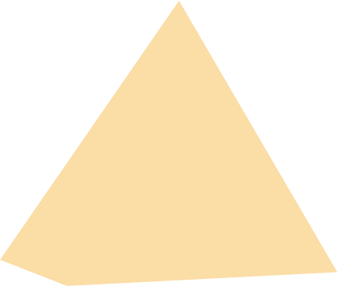
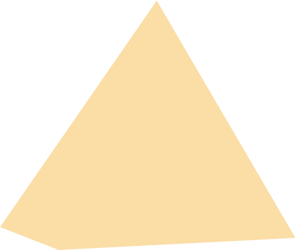

Система комплаенс
Полный обзор читайте в Годовом отчете на стр. 183-185
Система раскрытия информации
Информационная прозрачность является одним из важных элементов корпоративного управления и существенным фактором, влияющим на инвестиционную привлекательность Общества. В Обществе действует Положение об информационной политике.
В Обществе действует также Положение об обязательном раскрытии информации ПАО «Селигдар», регламентирующее порядок и сроки раскрытия информации в рамках Положения Банка России от 27.03.2020 № 714-П «О раскрытии информации эмитентами эмиссионных ценных бумаг».
В течение 2022 года Общество своевременно и в полном объеме раскрывало все сведения в соответствии с законодательством о ценных бумагах, кроме информации о сделках с санкционными банками, раскрываемой Обществом в ограниченном составе и объеме в рамках Постановления Правительства РФ от 12.03.2022 № 351, в связи с тем, что раскрытие эмитентом информации могло привести к введению мер ограничительного характера в отношении эмитента и (или) иных лиц, в том числе к введению мер ограничительного характера в отношении лица, о котором эмитентом раскрывается и (или) предоставляется информация.
В целях реализации принципов прозрачности и информационной открытости ПАО «Селигдар» в сети Интернет www.e-disclosure.ru/portal/company.aspx?id=12557 и на сайте seligdar.ru регулярно размещались информационные сообщения (пресс-релизы) о важных для акционеров и инвесторов Общества существенных событиях. В разделе «Раскрытие информации» размещались отчеты эмитента и годовой отчет Общества, сообщения о существенных фактах, информация об итогах Общих собраний акционеров, списки аффилированных лиц Общества, новые внутренние положения и эмиссионные документы, дивидендная история. Следуя рекомендациям Правил листинга ПАО «Московская Биржа», на сайте Общества создан отдельный раздел для акционеров и инвесторов, в котором размещаются информационные сообщения, материалы и итоги по состоявшимся для инвесторов и акционеров не менее чем за последние 12 месяцев событиям, а также календарь инвестора. Контакты для инвесторов размещены в отдельном подразделе.
Общество не ограничивается обязательным раскрытием информации в соответствии с требованиями законодательства и взаимодействует с акционерами, инвесторами, аналитиками и другими заинтересованными сторонами посредством различных информационных каналов и мероприятий (дополнительное раскрытие).
Принципы информационной политики:
- Принцип равноправия
- Принцип регулярности и оперативности
- Принцип полноты
- Принцип достоверности
- Принцип объективности
- Принцип доступности
- Принцип сбалансированности
- Принцип нейтральности
- Принцип защищенности
Защита инсайдерской информации
С целью предотвращения неправомерного использования информации в Обществе действует Положение об инсайдерской информации , а также Перечень инсайдерской информации. В соответствии с Положением инсайдеры Общества обязаны принимать все зависящие от них меры к защите и недопущению неправомерного использования и распространения инсайдерской информации.
В целях определения порядка доступа к инсайдерской информации, правил охраны ее конфиденциальности и контроля за соблюдением требований Федерального закона от 27 июля 2010 года №224-ФЗ и принятых в соответствии с ним нормативных актов, Совет директоров утвердил Правила внутреннего контроля по предотвращению, выявлению и пресечению неправомерного использования инсайдерской информации и (или) манипулирования рынком ПАО «Селигдар», а также Условия совершения операций с финансовыми инструментами инсайдерами ПАО «Селигдар» и связанными с ними лицами. Данные Правила определяют систему функционирования внутреннего контроля в целях предотвращения, выявления и пресечения неправомерного использования инсайдерской информации и (или) манипулирования рынком.
Контроль за крупными сделками и сделками, в совершении которых имеется заинтересованность
В ПАО «Селигдар» функционирует система внутреннего контроля за совершением сделок. Принятое Положение о договорной работе в ПАО «Селигдар» регламентирует единый порядок согласования, заключения и исполнения договоров, заключаемых от имени Общества. Проекты договоров проходят корпоративную экспертизу с целью соблюдения законодательства Российской Федерации при их заключении.
Все сделки, требовавшие одобрения органов управления Общества, получили такое согласие с учетом соблюдения требований Устава и Положения о конфликте интересов в ПАО «Селигдар» и его дочерних и зависимых обществах. Конфликт интересов при совершении указанных сделок отсутствовал.
В приложении №2 к Годовому отчету приведен перечень сделок, заключенных ПАО «Селигдар» в 2022 году и признаваемых в соответствии с Федеральным законом «Об акционерных обществах» крупными сделками и сделками, в совершении которых имеется заинтересованность, а также представлены сведения о наиболее существенных сделках, совершенных ПАО «Селигдар» и подконтрольными ему юридическими лицами.
Противодействие коррупции и регулирование возможного конфликта интересов
В соответствии с последними требованиями законодательства разработана и введена в действие новая редакция антикоррупционной политики (утверждена решением Совета директоров ПАО «Селигдар» 08.06.2022 г.). Политика определяет ключевые принципы и требования, направленные на предотвращение коррупционных проявлений, соблюдение норм применимого антикоррупционного законодательства его работниками и иными лицами, действующими от имени Холдинга «Селигдар». «Селигдар» открыто размещает действующую политику в свободном доступе на своем сайте в информационно-коммуникационной сети Интернет – https://seligdar.ru/for-investors/disclosure/officialdocs/.
Указанная политика распространяется и действует на всех предприятиях Холдинга.
Фактов нарушений антикоррупционного законодательства, коррупционных проявлений и наличия конфликта интересов в 2022 году в Холдинге и его дочерних и зависимых обществах не выявлено.
Положение об информационной политике
Страница раскрытия информации ПАО «Селигдар» на сайте информационного агентства «Интерфакс»
Полный текст документов представлен на сайте Компании
Положение об инсайдерской информации